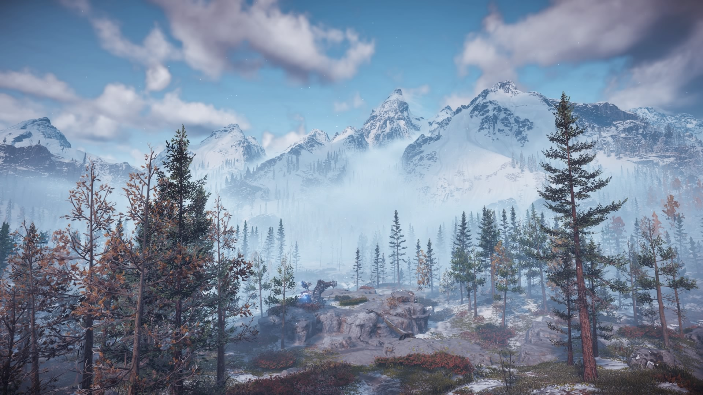
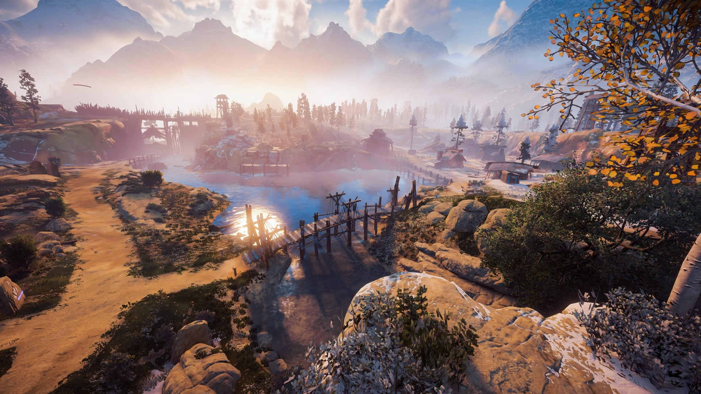
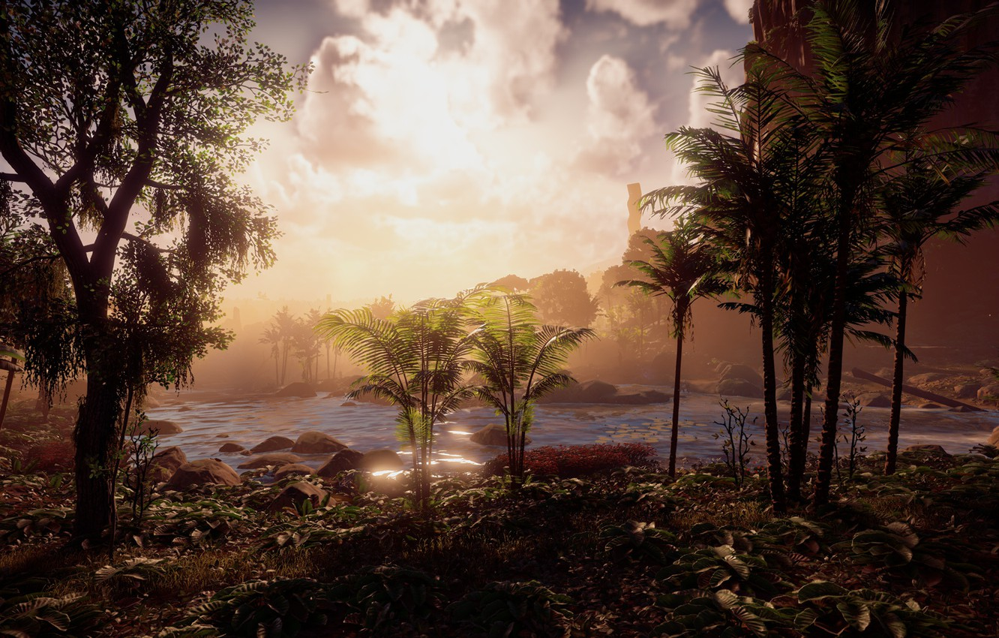

Home
Gameplay
Story
Where to Buy
Story



Explore lush and diverse environments in the Salpper region. New weather effects in environments change which Pokémon may appear on top of the day and night cycle of previous games.